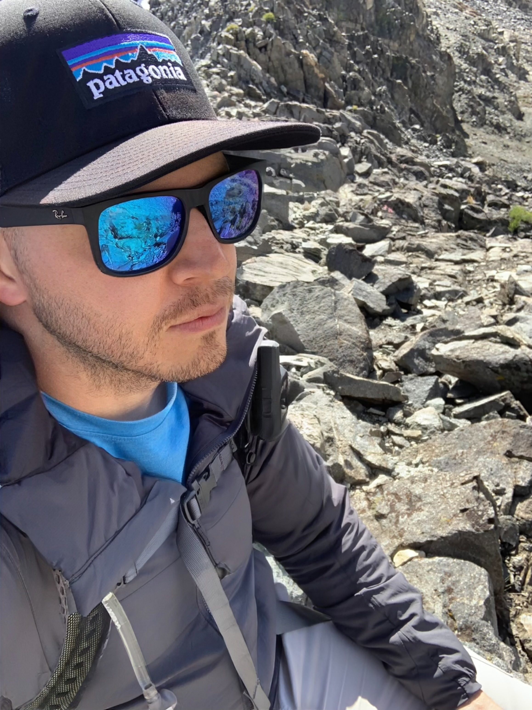

Justin Kampen
Data Analytics Professional | Aspiring Data Scientist

From Analytics to Data Science
I've spent over 15 years using data to solve problems, improve processes, and help organizations make informed decisions. My background includes business intelligence, data visualization, statistical analysis, predictive analytics, and automation across military operations, public safety, government, and higher education.
My Professional Background
Throughout my career, I've developed solutions using Python, SQL, Power BI, Tableau, and ArcGIS, translating complex datasets into accessible insights for stakeholders and leadership teams. My work has ranged from building automated reporting systems and interactive dashboards to analyzing operational trends and developing models that support resource planning and strategic decision-making.
My Transition Into Data Science
As technology continues to evolve, so has my interest in the possibilities of data science. I'm currently pursuing a Master of Data Science at the University of California, San Diego to deepen my knowledge of machine learning, statistical modeling, artificial intelligence, and advanced computational methods.
My next professional goal is to transition into a data science role where I can move beyond descriptive analytics and focus more extensively on predictive modeling, intelligent systems, and data-driven innovation.